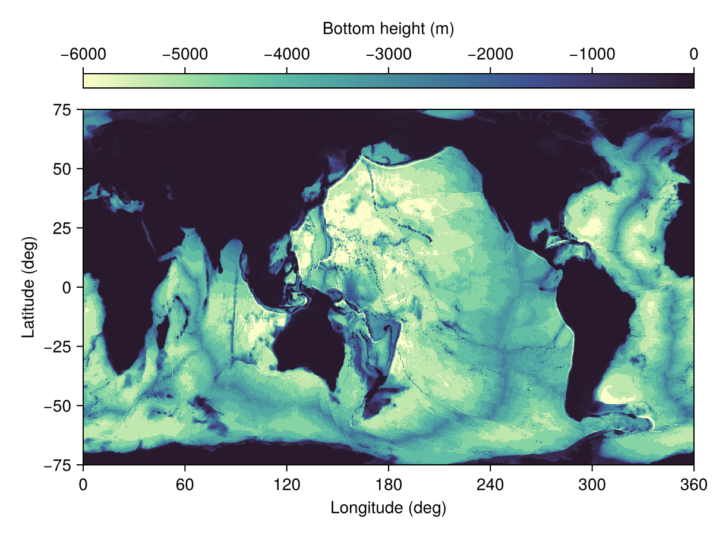
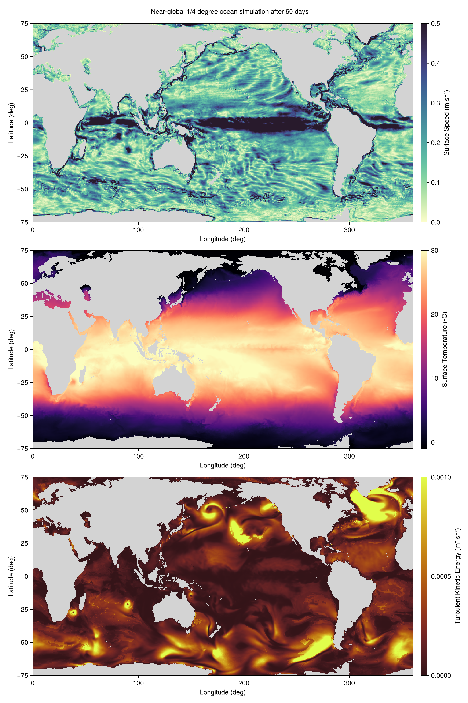

Near-global ocean simulation
This example sets up and runs a near-global ocean simulation using the Oceananigans.jl and NumericalEarth.jl. The simulation covers latitudes from 75°S to 75°N, with a horizontal resolution of 1/4 degree and 40 vertical levels.
The simulation's results are visualized with the CairoMakie.jl package.
Initial setup with package imports
We begin by importing the necessary Julia packages for visualization (CairoMakie), ocean modeling (Oceananigans, NumericalEarth), handling dates and times (CFTime, Dates), and CUDA for running on CUDA-enabled GPUs. These packages provide the foundational tools for setting up the simulation environment, including grid setup, physical processes modeling, and data visualization.
using NumericalEarth
using Oceananigans
using Oceananigans.Units
using CairoMakie
using CFTime
using Dates
using Printf
using CUDA[ Info: Oceananigans will use 8 threads
Grid configuration
We define a global grid with a horizontal resolution of 1/4 degree and 40 vertical levels. The grid is a LatitudeLongitudeGrid spanning latitudes from 75°S to 75°N. We use an exponential vertical spacing to better resolve the upper-ocean layers. The total depth of the domain is set to 6000 meters. Finally, we specify the architecture for the simulation, which in this case is a GPU.
arch = GPU()
Nx = 1440
Ny = 600
Nz = 40
depth = 6000meters
z = ExponentialDiscretization(Nz, -depth, 0, mutable=true)
grid = LatitudeLongitudeGrid(arch;
size = (Nx, Ny, Nz),
halo = (7, 7, 7),
z,
latitude = (-75, 75),
longitude = (0, 360))1440×600×40 LatitudeLongitudeGrid{Float64, Oceananigans.Grids.Periodic, Oceananigans.Grids.Bounded, Oceananigans.Grids.Bounded} on CUDAGPU with 7×7×7 halo
├── longitude: Periodic λ ∈ [0.0, 360.0) regularly spaced with Δλ=0.25
├── latitude: Bounded φ ∈ [-75.0, 75.0] regularly spaced with Δφ=0.25
└── z: Bounded z ∈ [-6000.0, 0.0] variably and mutably spaced with min(Δr)=5.4194, max(Δr)=709.801Bathymetry and immersed boundary
We use regrid_bathymetry to derive the bottom height from ETOPO1 data. To smooth the interpolated data we use 5 interpolation passes. We also fill in
- all the minor enclosed basins except the 3 largest
major_basins, as well as - regions that are shallower than
minimum_depth.
bottom_height = regrid_bathymetry(grid;
minimum_depth = 10meters,
interpolation_passes = 5,
major_basins = 3)
grid = ImmersedBoundaryGrid(grid, GridFittedBottom(bottom_height); active_cells_map=true)1440×600×40 ImmersedBoundaryGrid{Float64, Oceananigans.Grids.Periodic, Oceananigans.Grids.Bounded, Oceananigans.Grids.Bounded} on CUDAGPU with 7×7×7 halo:
├── immersed_boundary: GridFittedBottom(mean(z)=-2513.81, min(z)=-6000.0, max(z)=0.0)
├── underlying_grid: 1440×600×40 LatitudeLongitudeGrid{Float64, Oceananigans.Grids.Periodic, Oceananigans.Grids.Bounded, Oceananigans.Grids.Bounded} on CUDAGPU with 7×7×7 halo
├── longitude: Periodic λ ∈ [0.0, 360.0) regularly spaced with Δλ=0.25
├── latitude: Bounded φ ∈ [-75.0, 75.0] regularly spaced with Δφ=0.25
└── z: Bounded z ∈ [-6000.0, 0.0] variably and mutably spaced with min(Δr)=5.4194, max(Δr)=709.801Let's see what the bathymetry looks like:
h = grid.immersed_boundary.bottom_height
fig, ax, hm = heatmap(h, colormap=:deep, colorrange=(-depth, 0))
Colorbar(fig[0, 1], hm, label="Bottom height (m)", vertical=false)
save("bathymetry.png", fig)
Ocean model configuration
We build our ocean model using ocean_simulation,
ocean = ocean_simulation(grid)Simulation of HydrostaticFreeSurfaceModel{CUDAGPU, ImmersedBoundaryGrid}(time = 0 seconds, iteration = 0)
├── Next time step: 2.255 hours
├── run_wall_time: 0 seconds
├── run_wall_time / iteration: NaN days
├── stop_time: Inf days
├── stop_iteration: Inf
├── wall_time_limit: Inf
├── minimum_relative_step: 0.0
├── callbacks: OrderedDict with 4 entries:
│ ├── stop_time_exceeded => Callback of stop_time_exceeded on IterationInterval(1)
│ ├── stop_iteration_exceeded => Callback of stop_iteration_exceeded on IterationInterval(1)
│ ├── wall_time_limit_exceeded => Callback of wall_time_limit_exceeded on IterationInterval(1)
│ └── nan_checker => Callback of NaNChecker for u on IterationInterval(100)
└── output_writers: OrderedDict with no entrieswhich uses the default ocean.model,
ocean.modelHydrostaticFreeSurfaceModel{CUDAGPU, ImmersedBoundaryGrid}(time = 0 seconds, iteration = 0)
├── grid: 1440×600×40 ImmersedBoundaryGrid{Float64, Oceananigans.Grids.Periodic, Oceananigans.Grids.Bounded, Oceananigans.Grids.Bounded} on CUDAGPU with 7×7×7 halo
├── timestepper: SplitRungeKuttaTimeStepper
├── tracers: (T, S, e)
├── closure: CATKEVerticalDiffusivity{VerticallyImplicitTimeDiscretization}
├── buoyancy: SeawaterBuoyancy with g=9.80665 and BoussinesqEquationOfState{Float64} with ĝ = NegativeZDirection()
├── free surface: Oceananigans.Models.HydrostaticFreeSurfaceModels.SplitExplicitFreeSurfaces.SplitExplicitFreeSurface with gravitational acceleration 9.80665 m s⁻²
│ └── substepping: FixedTimeStepSize(20.254 seconds)
├── advection scheme:
│ ├── momentum: WENOVectorInvariant{5, Float64, Float32}(vorticity_order=9, vertical_order=5)
│ ├── T: WENO{4, Float64, Float32}(order=7)
│ ├── S: WENO{4, Float64, Float32}(order=7)
│ └── e: Nothing
├── vertical_coordinate: ZStarCoordinate
└── coriolis: Oceananigans.Coriolis.HydrostaticSphericalCoriolis{Oceananigans.Advection.EnstrophyConserving{Float64}, Float64, Oceananigans.Coriolis.HydrostaticFormulation}We initialize the ocean model with ECCO4 temperature and salinity for January 1, 1992.
set!(ocean.model, T=Metadatum(:temperature, dataset=ECCO4Monthly()),
S=Metadatum(:salinity, dataset=ECCO4Monthly()))Prescribed atmosphere and radiation
Next we build a prescribed atmosphere state and radiation model, which will drive the ocean simulation. We use the default Radiation model,
The radiation model specifies an ocean albedo emissivity to compute the net radiative fluxes. The default ocean albedo is based on Payne (1982) and depends on cloud cover (calculated from the ratio of maximum possible incident solar radiation to actual incident solar radiation) and latitude. The ocean emissivity is set to 0.97.
radiation = Radiation(arch)Radiation{Float64}:
├── stefan_boltzmann_constant: 5.67e-8
├── emission: SurfaceProperties
│ ├── ocean: 0.97
│ └── sea_ice: 0.97
└── reflection: SurfaceProperties
├── ocean: 0.05
└── sea_ice: 0.7The atmospheric data is prescribed using the JRA55 dataset. The JRA55 dataset provides atmospheric data such as temperature, humidity, and winds to calculate turbulent fluxes using bulk formulae, see InterfaceComputations. The number of snapshots that are loaded into memory is determined by the backend. Here, we load 41 snapshots at a time into memory.
atmosphere = JRA55PrescribedAtmosphere(arch; backend = JRA55NetCDFBackend(41),
include_rivers_and_icebergs = false)640×320×1×2920 PrescribedAtmosphere{Float32} on Oceananigans.Grids.LatitudeLongitudeGrid:
├── times: 2920-element StepRangeLen{Float64, Base.TwicePrecision{Float64}, Base.TwicePrecision{Float64}, Int64}
├── surface_layer_height: 10.0
└── boundary_layer_height: 512.0The coupled simulation
Next we assemble the ocean, atmosphere, and radiation into a coupled model,
coupled_model = OceanOnlyModel(ocean; atmosphere, radiation)EarthSystemModel{GPU}(time = 0 seconds, iteration = 0)
├── ocean: HydrostaticFreeSurfaceModel{CUDAGPU, ImmersedBoundaryGrid}(time = 0 seconds, iteration = 0)
├── atmosphere: 640×320×1×2920 PrescribedAtmosphere{Float32}
├── sea_ice: NumericalEarth.SeaIces.FreezingLimitedOceanTemperature{ClimaSeaIce.SeaIceThermodynamics.LinearLiquidus{Float64}}
└── interfaces: ComponentInterfacesWe then create a coupled simulation.
simulation = Simulation(coupled_model; Δt=25minutes, stop_time=60days)Simulation of EarthSystemModel{GPU}(time = 0 seconds, iteration = 0)
├── Next time step: 25 minutes
├── run_wall_time: 0 seconds
├── run_wall_time / iteration: NaN days
├── stop_time: 60 days
├── stop_iteration: Inf
├── wall_time_limit: Inf
├── minimum_relative_step: 0.0
├── callbacks: OrderedDict with 4 entries:
│ ├── stop_time_exceeded => Callback of stop_time_exceeded on IterationInterval(1)
│ ├── stop_iteration_exceeded => Callback of stop_iteration_exceeded on IterationInterval(1)
│ ├── wall_time_limit_exceeded => Callback of wall_time_limit_exceeded on IterationInterval(1)
│ └── nan_checker => Callback of NaNChecker for T_ocean on IterationInterval(100)
└── output_writers: OrderedDict with no entriesWe define a callback function to monitor the simulation's progress,
wall_time = Ref(time_ns())
function progress(sim)
ocean = sim.model.ocean
u, v, w = ocean.model.velocities
T = ocean.model.tracers.T
Tmax = maximum(interior(T))
Tmin = minimum(interior(T))
umax = (maximum(abs, interior(u)),
maximum(abs, interior(v)),
maximum(abs, interior(w)))
step_time = 1e-9 * (time_ns() - wall_time[])
msg = @sprintf("Iter: %d, time: %s, Δt: %s", iteration(sim), prettytime(sim), prettytime(sim.Δt))
msg *= @sprintf(", max|u|: (%.2e, %.2e, %.2e) m s⁻¹, extrema(T): (%.2f, %.2f) ᵒC, wall time: %s",
umax..., Tmax, Tmin, prettytime(step_time))
@info msg
wall_time[] = time_ns()
end
simulation.callbacks[:progress] = Callback(progress, TimeInterval(5days))Callback of progress on TimeInterval(5 days)Set up output writers
We define output writers to save the simulation data at regular intervals. In this case, we save the surface fluxes and surface fields at a relatively high frequency (every day). The indices keyword argument allows us to save only a slice of the three dimensional variable. Below, we use indices to save only the values of the variables at the surface, which corresponds to k = grid.Nz
outputs = merge(ocean.model.tracers, ocean.model.velocities)
ocean.output_writers[:surface] = JLD2Writer(ocean.model, outputs;
schedule = TimeInterval(1days),
including = [:grid],
filename = "near_global_surface_fields",
indices = (:, :, grid.Nz),
with_halos = true,
overwrite_existing = true,
array_type = Array{Float32})JLD2Writer scheduled on TimeInterval(1 day):
├── filepath: near_global_surface_fields.jld2
├── 6 outputs: (T, S, e, u, v, w)
├── array_type: Array{Float32}
├── including: [:grid]
├── file_splitting: NoFileSplitting
└── file size: 0 bytes (file not yet created)Running the simulation
run!(simulation)[ Info: Initializing simulation...
[ Info: Iter: 0, time: 0 seconds, Δt: 25 minutes, max|u|: (0.00e+00, 0.00e+00, 0.00e+00) m s⁻¹, extrema(T): (31.53, -1.88) ᵒC, wall time: 2.566 minutes
[ Info: ... simulation initialization complete (9.016 seconds)
[ Info: Executing initial time step...
[ Info: ... initial time step complete (3.049 minutes).
[ Info: Iter: 288, time: 5 days, Δt: 25 minutes, max|u|: (2.13e+00, 2.04e+00, 1.67e-02) m s⁻¹, extrema(T): (32.87, -1.89) ᵒC, wall time: 8.655 minutes
[ Info: Iter: 576, time: 10 days, Δt: 25 minutes, max|u|: (1.92e+00, 2.34e+00, 1.27e-02) m s⁻¹, extrema(T): (33.98, -1.88) ᵒC, wall time: 5.251 minutes
[ Info: Iter: 864, time: 15 days, Δt: 25 minutes, max|u|: (2.27e+00, 2.31e+00, 1.26e-02) m s⁻¹, extrema(T): (34.45, -1.90) ᵒC, wall time: 5.231 minutes
[ Info: Iter: 1152, time: 20 days, Δt: 25 minutes, max|u|: (2.19e+00, 2.24e+00, 1.44e-02) m s⁻¹, extrema(T): (34.95, -1.95) ᵒC, wall time: 5.222 minutes
[ Info: Iter: 1440, time: 25 days, Δt: 25 minutes, max|u|: (2.19e+00, 2.29e+00, 1.43e-02) m s⁻¹, extrema(T): (35.16, -1.92) ᵒC, wall time: 5.230 minutes
[ Info: Iter: 1728, time: 30 days, Δt: 25 minutes, max|u|: (3.85e+00, 2.57e+00, 2.28e-02) m s⁻¹, extrema(T): (35.67, -2.13) ᵒC, wall time: 5.274 minutes
[ Info: Iter: 2016, time: 35 days, Δt: 25 minutes, max|u|: (2.24e+00, 2.76e+00, 2.71e-02) m s⁻¹, extrema(T): (35.18, -2.14) ᵒC, wall time: 5.211 minutes
[ Info: Iter: 2304, time: 40 days, Δt: 25 minutes, max|u|: (2.66e+00, 3.03e+00, 4.18e-02) m s⁻¹, extrema(T): (35.50, -2.18) ᵒC, wall time: 5.177 minutes
[ Info: Iter: 2592, time: 45 days, Δt: 25 minutes, max|u|: (2.39e+00, 2.53e+00, 2.79e-02) m s⁻¹, extrema(T): (36.20, -2.19) ᵒC, wall time: 5.207 minutes
[ Info: Iter: 2880, time: 50 days, Δt: 25 minutes, max|u|: (2.32e+00, 2.90e+00, 2.35e-02) m s⁻¹, extrema(T): (33.93, -2.21) ᵒC, wall time: 5.211 minutes
[ Info: Iter: 3168, time: 55 days, Δt: 25 minutes, max|u|: (3.91e+00, 3.71e+00, 3.68e-02) m s⁻¹, extrema(T): (33.78, -2.21) ᵒC, wall time: 5.280 minutes
[ Info: Simulation is stopping after running for 1.104 hours.
[ Info: Simulation time 60 days equals or exceeds stop time 60 days.
[ Info: Iter: 3456, time: 60 days, Δt: 25 minutes, max|u|: (2.04e+00, 1.91e+00, 2.66e-02) m s⁻¹, extrema(T): (34.22, -2.01) ᵒC, wall time: 5.195 minutes
A pretty movie
It's time to make a pretty movie of the simulation. First we load the output we've been saving on disk and plot the final snapshot:
u = FieldTimeSeries("near_global_surface_fields.jld2", "u"; backend = OnDisk())
v = FieldTimeSeries("near_global_surface_fields.jld2", "v"; backend = OnDisk())
T = FieldTimeSeries("near_global_surface_fields.jld2", "T"; backend = OnDisk())
e = FieldTimeSeries("near_global_surface_fields.jld2", "e"; backend = OnDisk())
times = u.times
Nt = length(times)
n = Observable(Nt)
land = interior(T.grid.immersed_boundary.bottom_height) .>= 0
Tn = @lift begin
Tn = interior(T[$n])
Tn[land] .= NaN
view(Tn, :, :, 1)
end
en = @lift begin
en = interior(e[$n])
en[land] .= NaN
view(en, :, :, 1)
end
un = Field{Face, Center, Nothing}(u.grid)
vn = Field{Center, Face, Nothing}(v.grid)
s = @at (Center, Center, Nothing) sqrt(un^2 + vn^2) # compute √(u²+v²) and interpolate back to Center, Center
s = Field(s)
sn = @lift begin
parent(un) .= parent(u[$n])
parent(vn) .= parent(v[$n])
compute!(s)
sn = interior(s)
sn[land] .= NaN
view(sn, :, :, 1)
end
title = @lift string("Near-global 1/4 degree ocean simulation after ",
prettytime(times[$n] - times[1]))
λ, φ, _ = nodes(T) # T, e, and s all live on the same grid locations
fig = Figure(size = (1000, 1500))
axs = Axis(fig[1, 1], xlabel="Longitude (deg)", ylabel="Latitude (deg)")
axT = Axis(fig[2, 1], xlabel="Longitude (deg)", ylabel="Latitude (deg)")
axe = Axis(fig[3, 1], xlabel="Longitude (deg)", ylabel="Latitude (deg)")
hm = heatmap!(axs, λ, φ, sn, colorrange = (0, 0.5), colormap = :deep, nan_color=:lightgray)
Colorbar(fig[1, 2], hm, label = "Surface Speed (m s⁻¹)")
hm = heatmap!(axT, λ, φ, Tn, colorrange = (-1, 30), colormap = :magma, nan_color=:lightgray)
Colorbar(fig[2, 2], hm, label = "Surface Temperature (ᵒC)")
hm = heatmap!(axe, λ, φ, en, colorrange = (0, 1e-3), colormap = :solar, nan_color=:lightgray)
Colorbar(fig[3, 2], hm, label = "Turbulent Kinetic Energy (m² s⁻²)")
Label(fig[0, :], title)
save("snapshot.png", fig)
And now we make a movie:
CairoMakie.record(fig, "near_global_ocean_surface.mp4", 1:Nt, framerate = 8) do nn
n[] = nn
endThis page was generated using Literate.jl.